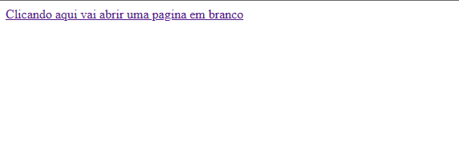
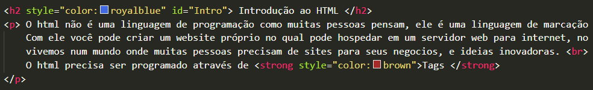

Dicionário do Front-end
Seja bem vindo ao meu primeiro projeto da DIO da formação HTML.
Vou colocar neste meu site conforme foi proposto um pouco sobre o que eu aprendi.
Espero que gostem.
Adalberto de Lima
Súmario
- Introdução ao HTML
- O que é uma tag
- Estrutura do html
- Atributos das Tags
- Tags de Tiporgrafia
- Listas Ordenadas e Não ordenadas
- Tag de Link
- Ancoragem dentro da própria página
Introdução ao HTML
O html não é uma linguagem de programação como muitas pessoas pensam, ele é uma linguagem de marcação para criação de páginas web.
Com ele você pode criar um website próprio no qual pode hospedar em um servidor web para internet, onde vai ser acessado por outros usários, isto é muito útil pois
vivemos num mundo onde muitas pessoas precisam de sites para seus negocios e ideias inovadoras.
O html precisa ser programado através de Tags
Mais você sabe o que é uma Tag?
As tags como são chamadas em inglês significam "etiquetas" e cada uma delas informam ao navegador como deve ser interpretado uma informação
As tags sempre vem acompanhadas dos simbolos < > e precisamos definir a sua abertura e fechamento: < para abrir > e < / para fechar >
As tags são dividas em 3 partes vamos estudar sobre elas:
Estrutura do html
O html precisa ser estruturado e divido em partes, como ja foi dito no topico anterior a nossa página html é divida em 3 partes:
- < html> É toda nossa página web tudo que vai ser inserido nela.
- < head> Pode ser considerado a cabeça da página, nela possuem informações que vão ser carregadas antes de aparecer ao usúario.
- < body> É o nosso corpo da página nela vem todo contúdo que você vai colocar para sua página web.
Veja o exemplo abaixo:
Atributos das Tags
Os atributos são propriedades que vem com algumas tags, algumas obrigatórias outras com diferentes variações.
Vamos conhecer alguns?
Atributo Id
Utilizado como um identificador de algum elemento na página html, também identificado para âncoras.
Veja abaixo mais um exemplo:
Atributo Style
o atributo html style possui informações de estilização, as vezes até de um estilo especifico dentro do CSS esse elemento possui alguns atributos como:
- type - define o tipo de estilo
- title - define o nome em outras paginas, como folhas em estilo cascata
entre outros no qual vamos aprender mais a frente...
Tags de Tipografia
Existem muitas tags de texto, vamos ver algumas a seguir:
Tags H1 a H6 - Título
Você conhece as tags de Títulos H?Elas vão do H1 (maior) ao H6 (menor) é uma tag muito utilizada na formatação de títulos em seu texto.
A tag que faz a inserção de um paragrafo na página se chama p , ela faz a abertura de um paragrafo de texto, observe:
Um fator importante a se comentar e que essa tag de paragrafo automáticamente libera um espaço na formatação.
Outra tag importante em nossas edições de texto, é nossa tag blockquote que é uma tag de Citação de um outro autor ou observação em um texto
Veja isso na prática:

Temos outra tag de formatação chamada Mark ou tag marca texto veja:
Existem algumas tags que servem para formatação do texto em si como a tag u (para sublinhado), a tag strong (para negrito) a tag i (para italico)
Listas Ordenadas e Não Ordenadas
Listas são uzadas para muitas coisas em nossas vidas, para organização para planejamento entre muitas outras coisas.O grande foco em relação as Listas é se a ordem desta listas importa ou não, pois no html temos 2 tipos possiveis de listas.
As Listas ordenadas (onde a ordem importa)
cria um lista com números usando a tag ol , que é muito usada para súmarios ou menus.
Nas listas é obrigatorio o uso da tag li dentro da tag ol ou ul
Já as Listas não ordenadas, é onde a ordem não importa , neste caso a lista será formatado com marcadores bolinhas
ou você pode estiliza-los com o CSS.
Para as não ordenadas usamos a tag ul, junto da tag li veja:
Tag de Links
Para criar links entre paginas ou para navegação em internet para outras páginas ja existentes precisamos usar a tag a (chamada de tag âncora)
Porem essa tag precisa obrigatoriamente do atributo href="seu link" e logo depois pode usar um texto descritivo para seu link.
Com essa tag de link a podemos usar o atributo Target - que define se o link vai ser aberto na mesma página que você está navegando ou em uma nova página.
Por convenção os programadores usam abrir na mesma página quando você está navegando dentro de um menu de sua propria página para o usuário não sentir que está saindo da página,
e abrir em uma nova página quando o link redireciona para uma página já existente.
Caso queira abrir o link em uma página em branco usamos o atributo _blank veja no exemplo abaixo:

Caso você queira que abra na mesma página basta usar o atributo _self (conforme já foi dito em casos de navegações de menu dentro do proprio site de uma página para outra)
Ancoragem dentro da própria página
Existem exemplos que você precisar criar um súmario dentro da sua própria página onde você pode navegar para o assunto escolhido de forma rápida,
apenas clicando sobre o tópico.
Para isso temos que usar um identificador # (Hash) e um atributo id (veja sobre o atributo id acima) veja o exemplo do súmario desta página e as ancoragens dentro dele:

Considerações Finais
Esse pequeno projeto foi criado a fins de estudo, peço desculpa por qualquer erro que eu possa não ter visto, aos poucos vou aperfeiçoando conforme for avançando em desenvolvimento web,
obrigado por ter visto até aqui.
Adalberto